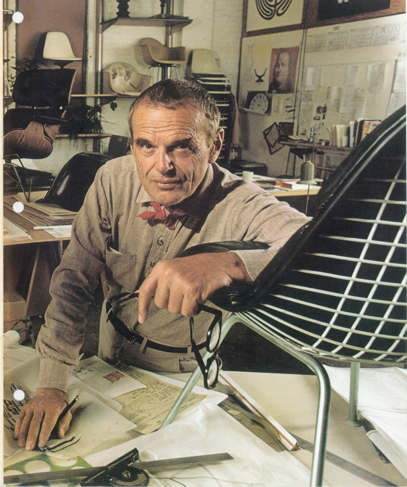

Charles Eames
Architecte et designer formé dans le Missouri, Charles Eames s’intéresse très tôt aux structures, aux procédés industriels et à la production en série.

Designers
Couple de créateurs américains, Charles et Ray Eames ont construit une œuvre à la croisée du mobilier, de l’architecture, du graphisme, du cinéma et de la pédagogie visuelle.

Architecte et designer formé dans le Missouri, Charles Eames s’intéresse très tôt aux structures, aux procédés industriels et à la production en série.

Artiste et designer, Ray Kaiser Eames apporte au studio une sensibilité graphique, picturale et textile décisive.
Leur collaboration naît à la Cranbrook Academy of Art, puis se déploie en Californie dans un studio pensé comme un laboratoire.
Chez les Eames, le design n’est pas seulement une forme : c’est une réponse à un problème concret. Ils testent, plient, assemblent, filment et recommencent jusqu’à trouver un équilibre entre usage, coût, émotion et fabrication.
Leur travail sur le contreplaqué moulé, la fibre de verre, le métal et les systèmes modulaires accompagne l’après-guerre américain et transforme durablement le mobilier moderne.
Leur influence dépasse l’objet : expositions, films, images, espaces et dispositifs éducatifs composent une vision globale de la culture matérielle moderne.